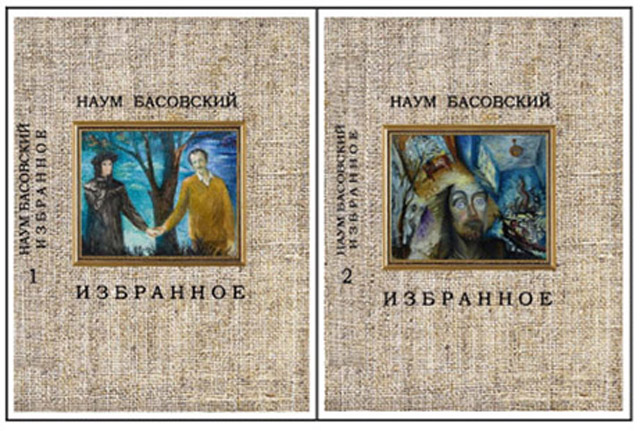

|
|
|
|

ПРЕДУВЕДОМЛЕНИЕ
26 февраля 1992 года автор со своей семьей
репатриировался в Государство Израиль. Следовательно, 26 февраля 2017 года этому
событию исполнилось ровно четверть века.
В
двухтомнике «ИЗБРАННОЕ» представлены стихотворения и поэмы, написанные в
течение этих 25 лет на земле Израиля.
В
1-й том включены произведения, опубликованные в книгах, которые были
изданы в Израиле за период с 1999 по 2014 гг.
Во 2-й том вошли сочинения, написанные в 2014-2017 гг. и до сих пор не публиковавшиеся, а также стихотворные переложения из ТАНАХа.